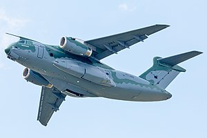

I enjoy finding pictures about guns, soldiers and pretty much anything related to that.
Below are some pictures that I found. In my free time I like to read books about World War 1, World War 2 and and other modern wars.
Marines Emblem
Special Operations
Airforce Patch
Below are some cool pictures of men, women or vehichles that serve in the military.
M-60 Gunman
37mm Anti-Aircraft Shells
Ammunition (Please read the description on the bottom of the picture)
Btw, "incendiary tracer" means a bullet or shell whose course is made visible in flight by a trail of flames or smoke, used to assist in aiming.
Pistol/ Revolver
KC-390 Millenium

Fighter Jet
Warship Fleet
B-17
Naval Fleet
Task Force CK-150
My Favorite Civil War Generals
General Grant (Union)
General Lee (Confederate)
General "Stonewall" Jackson (Confederate)
General Burnsides (He's not one of my favorites, but he looks funny. He literally has side burns)(Union)